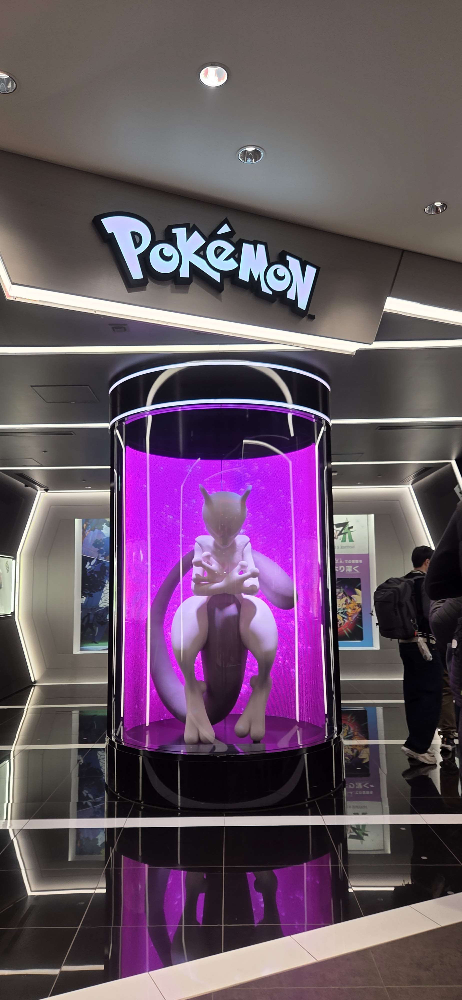
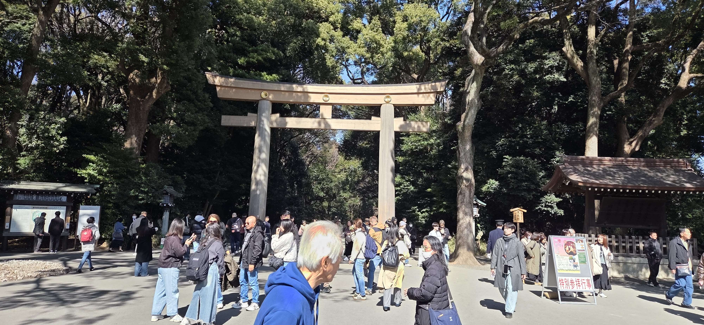
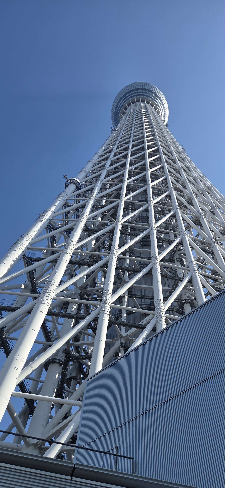
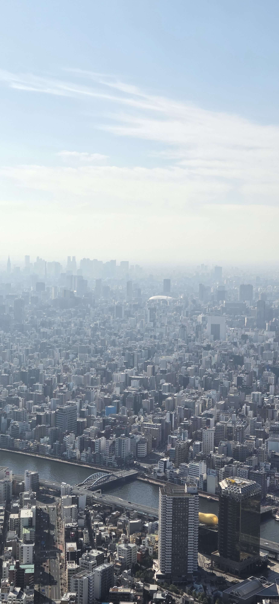
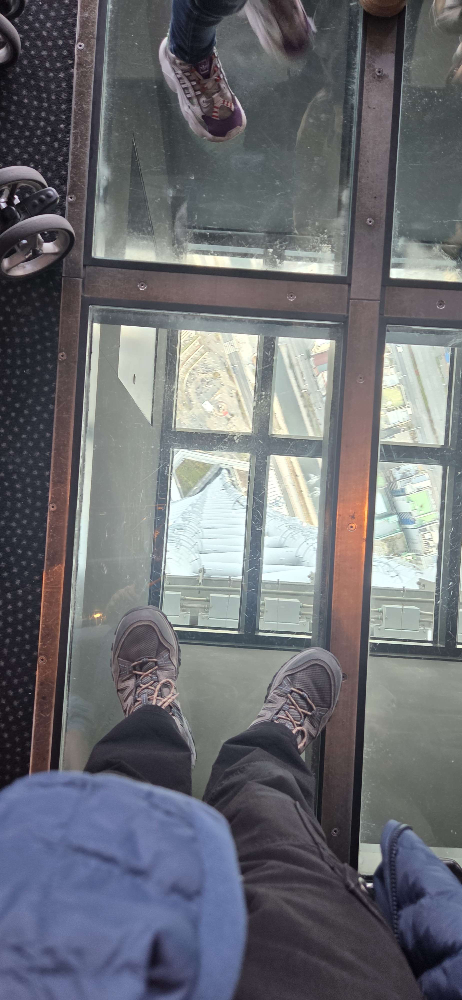
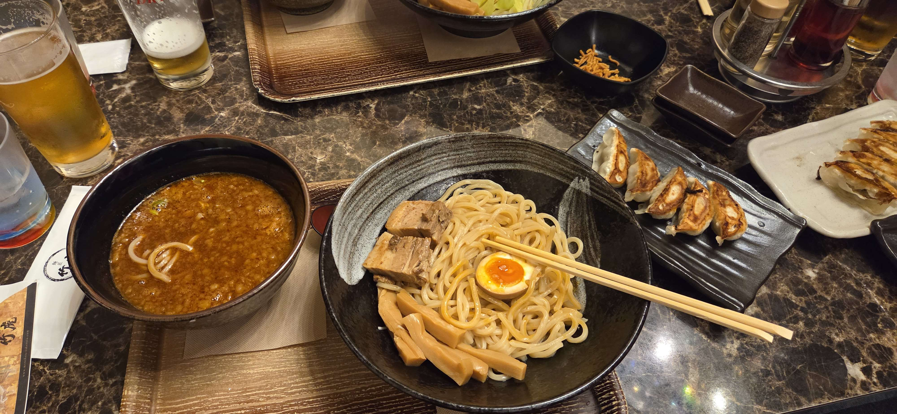
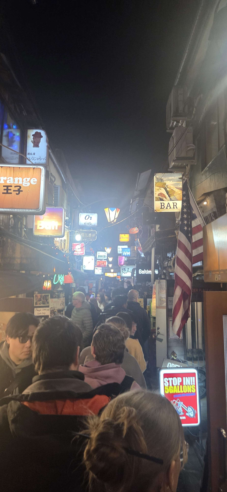
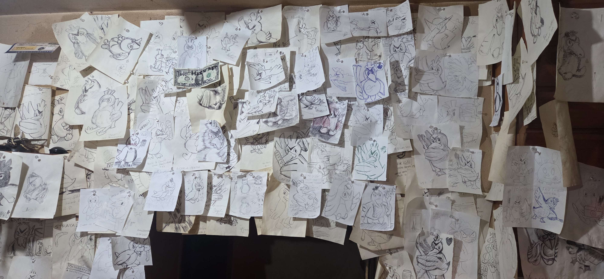
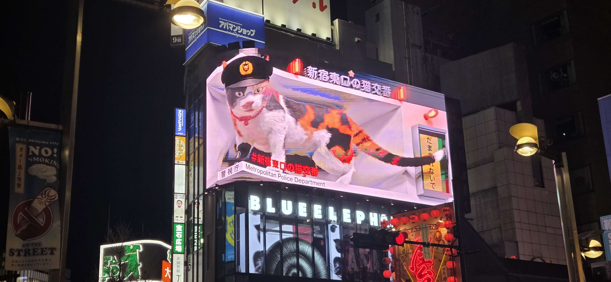

Tokyo Day 3-4
Day 3 was a much chiller affair, with me heading over to shibuya for an explore, ive read that the shopping center Parco has some good youth fashion shops, so i headed there first. Unfortunately they were all close, (Saturday? idk) but luckily the top floor
which had the pokemon center and the nintendo store was open, so i obviously had to have a nosey, in prepperation for more purchases next time im over. After some more exploring of shibuya i decided it was too busy so headed for the greener pastures of shinjuku park.
By this point the sun was out and was a comfy 18 ish degrees, so i chilled in the park for about half an hour enjoying the sun before continuing through the park towards Meji Jingu, a large shrine complex dedicated to the empirial family. Along the way over i
noticed a small path leading towards the center of the park, going through i realised that it was the entrance to an old imperial gardens/fishing spot of an old emperor (there was a 500yen entrance fee), it was really beautiful and away from the hubub of the inner city. I easily spent an hour plus there, just wandering the paths, and basking in the sun and silence that you tend to miss in such a large city.
After i had explored all the nooks and crannies of the inner park, i headed over to my main reason for being there, and yep, it was a shrine, bery similair to the others, but it does have a big tori gate, so that was fun.
I had an booking at the tokyo skytree that day at 14, so by this point i had about an hour to kill before i had to begin heading over, so i continued my exploration, walking further into shinjuku,spending the hour
just enjoying the atmosphere and architecture of the city.
Eventually it was time to go to the skytree, which like most of tokyo, had a station nearby where were i was meaning to go is on the same line as it, very handy. The skytree is a huge complex of fashion, food and clothing, a giant shopping center underneath one of the tallest buildings in tokyo. Maybe because it was a saturday, but the queues for the skytree were massive, and i
was happy that i chose to book the ticket in advance, so i got to skip the queue entirely. However there were more queues to come, as you had to use lifts to go up and down the 350m (understadably), then a 20min queue to get up to the top deck afterwards, it felt like i spent more time in queues then actually appreciating the great views that the tower gave me. Which were indeed quite spectacular, sadly i couldnt see Mt Fuji that day, from the haze, but i could
see all the way to Tokyo Bay.
Originally i had planned to go on a walk with the hostel at 3pm the same day, but as the queues were so long and i didnt want to rush the experience i decided to forfiet the walk and do it another day, instead i decided to walk back home and chill for a bit before dinner. Where again i hit up some people on hostel world for a meetup. Today it was a German, French, Brit and a Dane! We decided to go over to shinjuku again as ive read there are
quite alot of good places to eat there, which is true, but it felt like everyone had the same idea as us, and the entire area was filled with people, but eventally we found a japanese place with a small queue. We were gived a private room which was nice, so it was quiet and we actually hear each other, and made for some nice conversations. I ended up having Tsukemen, which a form of ramen, except the noodles are served seperately along with a very concentrated broth, which you then dip the noodles into.
Ive read about this type of ramen before going to Japan, and was on my bucket list of things to try, so that was really nice, and i really enjoyed it! I highly recommend it for anyone else that ahs the chance.
We then proceeded to go to the Golden Gai, which is an area in shunjuku packed with hundreds of tiny bars. Eventually finding one, which turns out is owned by a big pokemon fan, who had hundreds of farfetc'd drawings on the walls, the drinks were expensive, but it was nice to talk with the locals that were also in the bar.
After that there wasnt much time until the last metro of the night departs, so we called it quits there for the day.
The next day i let myself sleep in, as i had gotten up quite early, which was a good plan, as i woke up with a cold, snotty ad just blegh :( which sucks, as i had planned to go to hakone or nikko that day, but that had to be cancelled. Instead i slept till 11, then deciding that some food was in order, got out of bed for that. The cold itself wasnt bad, but i wanted to take it as chill as possible so that i can be better
for the following day. So today was a chorey day, repacking my suitcase, doing my laundry and sorting out photos that ive take over the last few days, and sleeping. I did eventually go out and buy a quick dinner at 11pm and to my surprise i met the Dane and Brit from yesterday here! So we chatted for a while, and watched the Canada vs. USA hokey match while playing some uno, it was very nice and gave me some time out of bed so that could sleep properly that night. We decided that we would meet up the next day to do an explore.